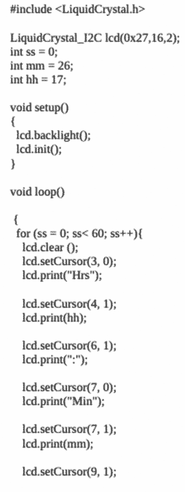
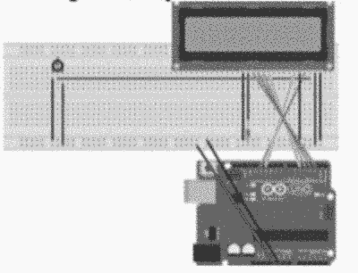
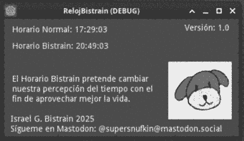

Introducción
Durante toda nuestra vida asimilamos el tiempo de una u otra forma, en algunas ocasiones lo asimilamos a gran velocidad o, por lo contrario, también puede parecernos “Eterno”. Bajo ésta premisa básicamente depende de la actividad que estemos realizando para notar cómo el tiempo va más o menos rápido. La actividad que realizamos, si la disfrutamos o no, nos permite cambiar la percepción que tenemos de las horas o los minutos.
En muchas ocasiones me he preguntado en qué se basa ésta percepción del tiempo y en muchas de ellas la respuesta me ha llevado a Einstein con su relatividad.
Es por lo anterior que decidí inventar un nuevo horario, no solamente para hacer más sencilla la percepción del tiempo y su relatividad sino también para cambiar la manera en la que percibimos nuestra vida misma y tener más horas al día para dedicarlas a las cosas que realmente nos alegran.
Metodología
El horario que propongo se basa en “alargar” los días y que éstos pasen de tener 24 a 28:40 horas. No pretendo cambiar o poner en duda las estaciones del año, la posición del sol, o incluso la forma de la tierra. Éste horario que propongo tiene como único propósito cambiar la percepción de nuestro día y por lo tanto de nuestra vida. Cada hora en el horario normal lleva consigo 60 minutos, el horario que propongo cada hora lleva consigo 50 minutos, es decir, 10 minutos menos cada hora. Si lo vemos de lejos parece sencillo, sin embargo tiene pros y contras que veremos más adelante.
En las siguientes páginas adjunto el método que tomé para llegar al punto de sumar dos horas más en cada periodo del día, es decir, dos horas más por la mañana (Antes de las 12:00 del medio día) y dos horas más por la tarde (Después de las 12:00 del medio día) Tomando en cuenta que de las 0:00 horas al comienzo del día hasta las 12:00 horas del medio día han pasado 720 minutos, al restar 10 minutos a cada hora tenemos que de las 0:00 horas del comienzo del día hasta las 12:00 del medio día tenemos un total de 840 minutos (En el horario propuesto las 12:00 horas del medio día son las 14:10)
Para llegar a ello podemos hacer unas sencillas ecuaciones:
x/12 = 60 --> x=60 x 12 --> x = 720
En la ecuación anterior tenemos que buscamos los minutos de 12 horas con horas de 60 minutos cada una, dándonos un total de 720 minutos por 12 horas.
X/13= 60 --> x = 60 x 13 --> x = 780
En la ecuación anterior agregamos una hora más con el fin de sacar los minutos que tendría si a cada hora se le restaran 10 minutos, es decir, si sumáramos 120 minutos de las 0:00 horas a las 12:00 del medio día, dándonos un total de 840 minutos
Como comprobación de lo anterior basta con dividir lo siguiente: 60/13 = 4.6153846153846 y al multiplicarlo por 2 queda: 9.2307692307692 redondeando a los 10 minutos de cada hora. Basándonos en lo anterior tenemos la siguiente tabla – horario:
Nótese cómo cada hora en el Horario Bistrain abarca 50 minutos exactos, al realizar la suma pertinente el día en el horario Bistrain termina a las 28 horas con 40 minutos y después volvería a 0:00 como en el inicio cada minuto cuando llega a 49 no seguiría a 50 o 51 sino también reiniciaría a :00
Herramientas informáticas de visualización automatizada del Horario Bistrain
Con el fin de que el Horario Bistrain tenga una mejor visibilidad escribí dos programas informáticos, uno para ser usado en una placa de microcontrolador Arduino UNO con un módulo sencillo de pantalla LCD de 16×2 y otro programa para visualizarse en cualquier computadora o teléfono que soporte la versión de Python 3.8. A continuación adjunto los códigos con el fin de que quien esté interesado encuentre una manera sencilla de utilizar la tabla anterior y el proceso se automatice (En los dos programas se tendrá que colocar el Horario Bistrain previamente en el mismo código): Código Python (En su versión 3.8, para correrse en Android utilicé la App “Pydroid 3):
El código de el microcontrolador Arduino UNO es el siguiente:

El Microcontrolador Arduino UNO puede conectarse a la pantalla siguiendo el siguiente esquema, bastará con cargar el código anterior para hacerlo funcionar:
Notas extras para entusiastas que deseen probar el Horario Bistrain así como las herramientas otorgadas
Cambiar la percepción del tiempo no es una tarea sencilla, durante los primeros días que utilicé el horario tenia una confusión enorme sobre el momento en el que estaba viviendo, sin embargo, me hizo preguntarme: ¿Cuánto dura un momento? Un momento puede durar mucho o poco según lo sienta la persona que lo está viviendo. Al tener más horas al día y a través de los mismos, noté que podía realizar más actividades, así también como que en el momento en el que no veía mis relojes con cada horario realmente no era consciente de la hora que era, por lo tanto me podía centrar más en la actividad.
Por otra parte, intenté que las actividades que realizara fueran sumamente de mi agrado, al final de cuentas, los momentos, las actividades, la conciencia y el tiempo mismo forman parte de nuestra vida y ésta a su vez a nuestra propia decisión de vivirla.
Pros:
Tener más tiempo (o aumentar nuestra percepción del tiempo) para realizar más actividades y estar con las personas que amamos.
Dedicar más tiempo a lo que realmente nos alegra la vida
Al cambiar la percepción del tiempo te das cuenta de que el tiempo es el único bien que jamás regresa, por lo tanto cuidas más a que o a quien se lo dedicas
La vida anclada al tiempo puede hacerse larga y monótona si no somos conscientes de las muchas percepciones que como seres humanos tenemos el poder de cambiar.
Aprender que el tiempo bien aplicado puede otorgarnos grandes beneficios y alegrías
Otorga motivación para hacer más cosas
Al cambiar la percepción que tienes de las horas que duermes permite que te sientas más despejado y descansado por la mañana
Contras:
Cuando realizas una actividad que te desagrada (Como ir al trabajo o limpiar por ejemplo) con éste horario el tiempo parece que va aún mas lento de lo que la percepción del mismo te propondría incluso con el horario normal
La gran confusión del tiempo y de la vida misma puede ser perturbadora en los primeros días
En el horario de verano es aún más perturbador ya que cambia completamente la percepción de las horas y tienes que comenzar de nuevo.
Utilizar dos relojes al mismo tiempo con horarios diferentes puede hacer lenta la manera de acostumbrarse al horario propuesto.
Actualización 2025:
He actualizado parte del código, ahora hay una herramienta lista para descargar desde mi GitHub para Windows y Linux en la cual se muestra el horario normal y el horario Bistrain:
 Descárgalo aquí :3Gracias por leer
Por: Israel G. Bistrain 2021
Si lo deseas puedes seguirme en Mastodon:
@supersnufkin@mastodon.social